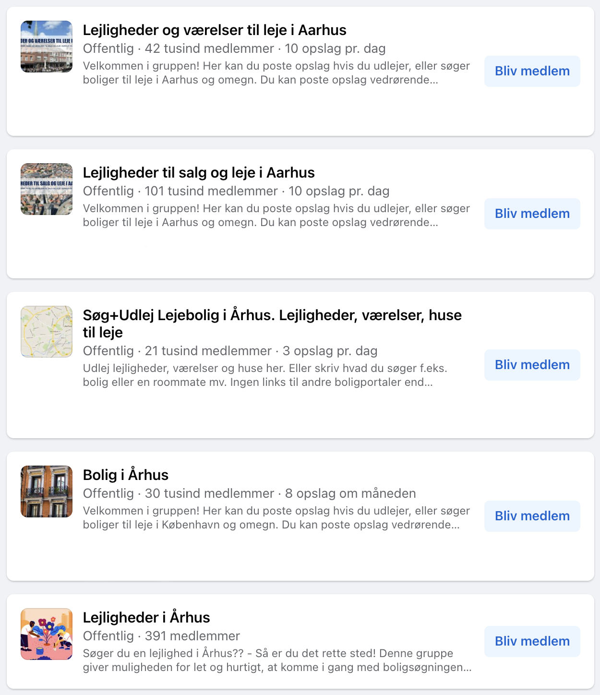

Lad os starte et sted: Facebook
Facebook er en god platform, til at komme i kontakt med andre unge mennesker
der søger efter et sted at bo. Der findes en stor bunke af grupper på Facebook,
for folk der leder efter bolig. Det er meget forskelligt, hvad der bliver slået op i disse grupper.
Det er ofte unge der bor i en lejlighed og søger en ny roomie, eller unge
der mangler et sted at bo og skriver ud i disse grupper. I nogle grupper er der også boligselskaber,
der lægger deres ledige lejligheder op.
På billedet til højre kan du se nogle af de forskellige Facebookgrupper,
du kan bruge hvis man søger bolig i Aarhus.

Boligportaler
Et andet sted man kan søge efter bolig, er diverse boligportaler.
Boligportaler skal bruges, hvis man udelukkende leder efter en tom lejlighed.
Altså at man ikke leder efter en roomie. Det er ofte boligselskaber, der
betaler sig ind hos boligportalerne, for at få vist deres ledige lejligheder frem.
Dette betyder så, at man skal købe adgang til at kontakte udlejeren igennem boligportalen.
Det er en omkostning, man skal tage med, når man søger efter ny bolig, men det kan
ofte betale sig, da der er et rigtig godt udvalg hos de forskellige boligportaler.
Lad os kigge på nogle af de forskellige boligportaler. Der er linket til de forskellige sider på billederne,
så i hurtigt kan komme ind på siderne.
Boligportal.dk
Den mest populære og den meste kendte er: ”boligportal.dk”, eller mange kalder
den bare ”boligportalen” fordi det ofte er den folk bruger. Man kan søge den frem
på nettet på sin computer og lede efter bolig der, men den fås også som app,
hvilket er smart fordi det er hurtigt og nemt at kontakte udlejere.